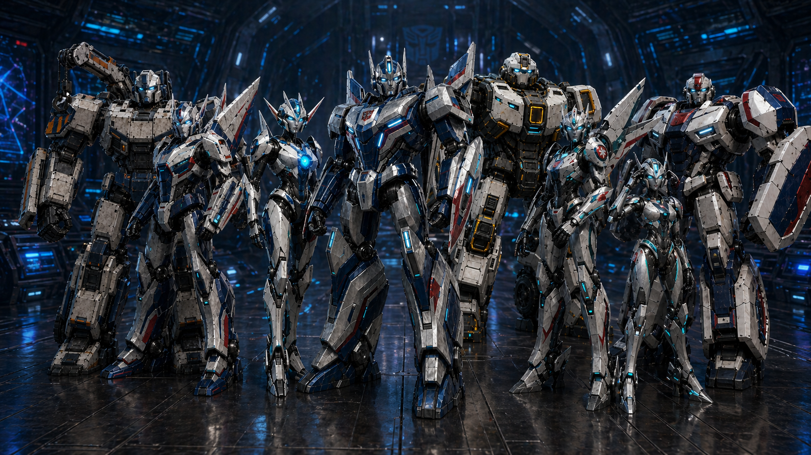
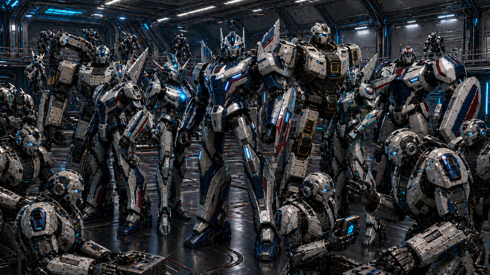

Потерянный корабль-носитель автоботов пережил войну в тишине дальнего сектора и
теперь должен решить, стоит ли возвращаться к тем, кто почти забыл о нём.
На сайте интегрирован полный текст обновлённой истории без сокращений. Основной
акцент сделан на чтении глав, палубах корабля, офицерах и живом составе экипажа.
Story Reader
Полная история по главам
Эта версия сайта читает полный обновлённый текст, а не короткий пересказ. Каждая
глава раскрывается через внутренние разделы, ключевых персонажей и досье по состоянию
корабля в конкретный момент истории.
mood
Глава первая. Завет
Тайный протокол исхода
Ключевые фигуры главы
Кто сильнее всего чувствуется в тексте этой главы
Разделы главы
Активный раздел: I.
Ship Layout
Разделы корабля
«Эгида Авангарда» должна ощущаться как огромный автоботский носитель: строгий,
светлый, функциональный и военный, но не пустой. Корабль сам по себе — отдельный
персонаж, и внутри него должна чувствоваться жизнь.
Officer Deck
Главные офицеры
Это не вся команда корабля, а её нервные узлы: те, через кого проходят приказ,
энергия, ремонт, разведка, медицина, доки и внутренняя безопасность.

Офицерский строй
Командное ядро корабля
Эти боты не делают вид, что заменяют всю армию автоботов. Они просто слишком долго
были теми, кто удерживал корабль, память и дисциплину в изоляции, пока большая
война не вспомнила о них снова.
Ship Company
Рядовой экипаж и рабочие палубы
На борту живут не только главные офицеры. Корабль держат палубные техники, охрана,
сменные пилоты, грузовые команды, разведчики, медицинские помощники и обслуживающий
состав, без которого никакая красивая легенда не проживёт и одного цикла.

Основной состав корабля
Именно эти боты создают ощущение живого корабля: не одинокий мостик с
командирами, а настоящий автономный носитель, на котором есть рабочая рутина,
смены, логистика, охрана и постоянное техническое напряжение.
Mission Log
Журнал миссии
Краткая трасса истории от тайного исхода с Кибертрона до сигнала, который должен был
снова вернуть корабль в большую войну.